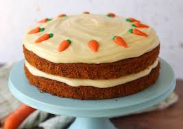

Carrot Cake

Delicious Carrot Cake
With its outstanding spice flavor, super moist crumb, and velvety cream cheese frosting, this is truly the best carrot cake.
Use brown sugar and toasted pecans for deeper flavor.
Ingredients
- 8oz full fat cream cheese
- Butter
- Confectioners sugar
- Sugar
- Vanilla extract
- A pinch of salt
Steps
- Preheat oven to 300°F (149°C). Line a large baking sheet with parchment paper or a silicone baking mat. Spread the chopped pecans on the sheet and toast for 7-8 minutes. Remove from the oven and allow to cool for 10-15 minutes.
- Turn the oven up to 350°F (177°C). Grease two or three 9-inch cake pans, line with parchment paper rounds, then grease the parchment paper. Parchment paper helps the cakes seamlessly release from the pans. (If it’s helpful, see this parchment paper rounds for cakes video & post.)
- Whisk the brown sugar, granulated sugar, oil, eggs, applesauce, and vanilla together in a large bowl until combined and no brown sugar lumps remain. In another large bowl, whisk the flour, baking powder, baking soda, salt, cinnamon, ginger, nutmeg, and cloves together. Pour the wet ingredients into the dry ingredients and, using a rubber spatula or wooden spoon, fold the ingredients together until just combined. Fold in the carrots and 1 cup of the toasted pecans. (The rest of the pecans are for garnish.)
- Pour/spoon the batter evenly into the cake pans. If using three cake pans, bake for 20-24 minutes. If using two cake pans, bake for 30-35 minutes. Test the center with a toothpick. If it comes out clean, the cakes are done. If not, continue to bake until cooked through. Do not over-bake. Allow the cakes to cool completely in the pans set on a wire rack. The cakes must be completely cool before frosting and assembling.
- Make the frosting: In a large bowl using a handheld or stand mixer fitted with a whisk or paddle attachment, beat the cream cheese and butter together on medium-high speed until smooth, about 2 minutes. Add the confectioners’ sugar, vanilla extract, and a pinch of salt. Beat on low speed for 30 seconds, then increase to high speed and beat for 3 minutes until completely combined and creamy. Add more confectioners’ sugar if frosting is too thin, a little milk if frosting is too thick, or an extra pinch of salt if frosting is too sweet. Frosting should be soft, but not runny.
- Assemble and frost: First, using a large serrated knife or cake leveler, layer off the tops of the cakes to create a flat surface. Place 1 cake layer on your cake turntable, cake stand, or serving plate. Evenly cover the top with frosting. Top with 2nd layer, more frosting, and then top with the 3rd layer. Spread remaining frosting all over the top and sides. Decorate the sides and top of the cake with the remaining toasted pecans. Refrigerate cake for at least 15-20 minutes before slicing. This helps the cake hold its shape when cutting.
- Cover leftover frosted cake tightly and store in the refrigerator for up to 5 days.